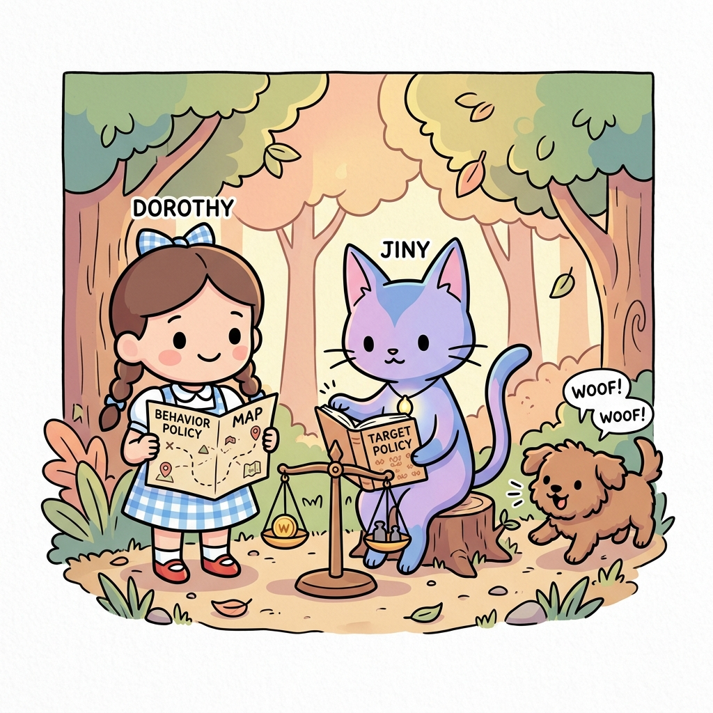
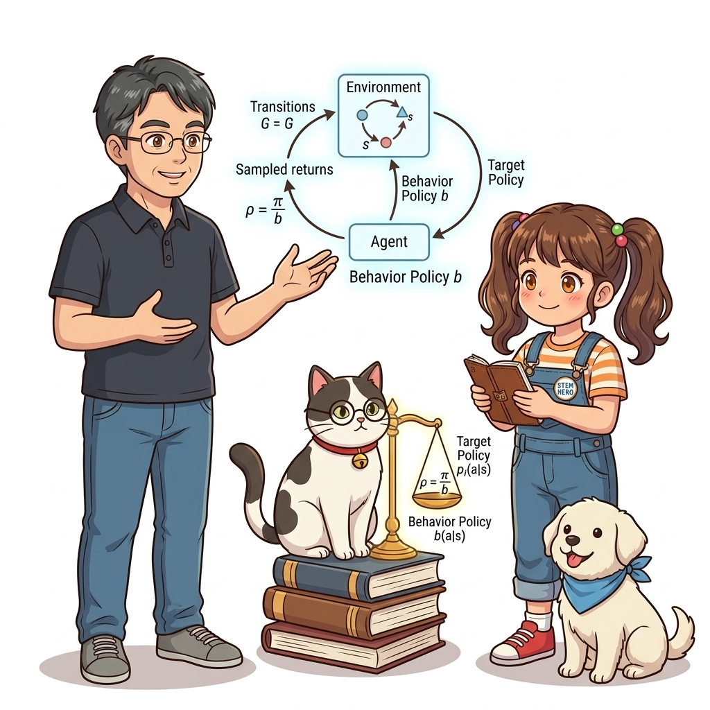
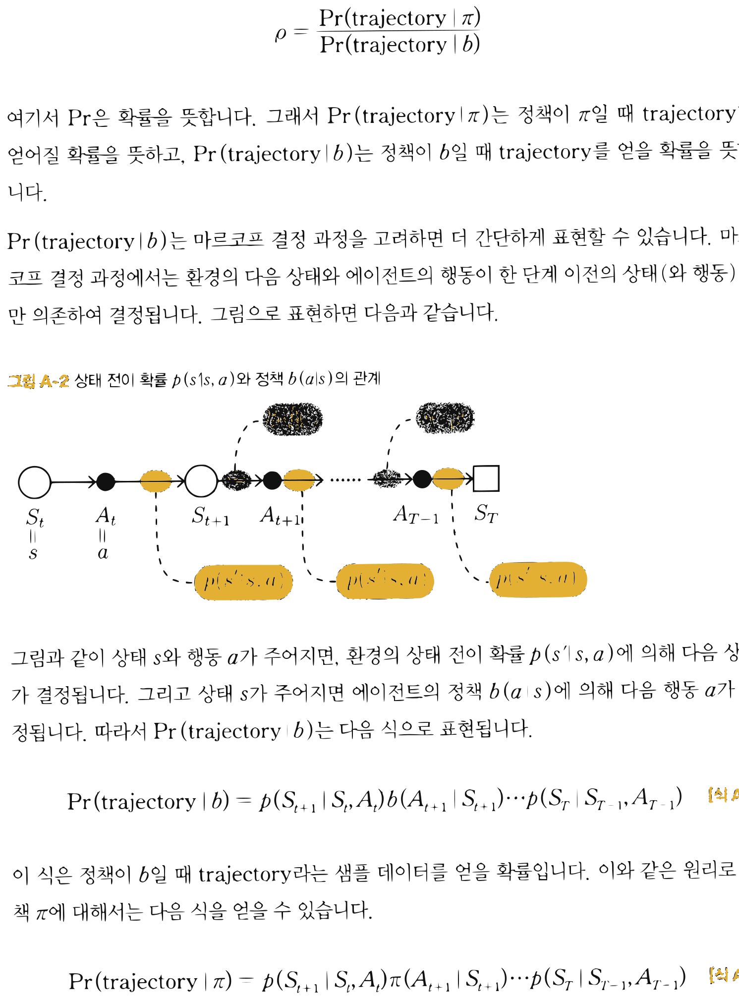
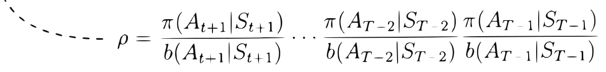

APPENDIX A: 오프-정책 몬테카를로법 (Off-Policy Monte Carlo)
그림 A-0 탐험 지도(Behavior Policy)를 든 도로시와 타깃 정책책(Target Policy)을 쥔 채 확률 비율 저울을 맞추어 오프-정책을 학습하는 지니

행동 정책(Behavior Policy b)을 통해 환경을 마음껏 탐색하며 수집한 경험 데이터로부터, 우리가 진정으로 도달하고자 하는 최적 목표 정책(Target Policy π)의 가치를 정확하게 학습하는 오프-정책 몬테카를로법의 이론과 구현을 다룹니다. 궤적 확률 비에서 환경 전이 확률이 마법처럼 소거되는 수학적 증명과 중요도 샘플링(Importance Sampling)의 역방향 누적 알고리즘을 도로시, 지니 조교와 함께 완성해봅시다!
A.1 오프-정책 몬테카를로법 이론
1) 온-정책과 오프-정책의 본질적 차이
온-정책(On-Policy) 몬테카를로법에서는 평가하고자 하는 대상 정책 π에 따라 에이전트가 직접 행동하고, 그 과정에서 얻은 수익 샘플들의 산술 평균을 구했습니다:
qπ(s, a) = Eπ [ G | St = s, At = a ]
Qπ(s, a) ≈ ( G(1) + G(2) + … + G(n) ) / n (단, G(i) ~ π)
하지만 온-정책 방식은 “탐색(Exploration)을 위해 무작위성을 유지해야 하면서도, 동시에 최적 행동(Greedy)을 찾아야 한다”는 모순에 부딪힙니다.
반면 오프-정책(Off-Policy) 방식은 역할을 둘로 명확히 분리합니다:
- 행동 정책 (Behavior Policy, b): 온갖 모험과 무작위 탐색을 감행하며 다양한 경험 데이터를 수집하는 정책
- 대상 정책 (Target Policy, π): 행동 정책이 가져온 데이터를 바탕으로 100% 탐욕적(Greedy)인 최적의 길만을 날카롭게 벼려내는 정책
그림 A-0b 행동 정책 b가 수집한 경험 샘플을 중요도 비율 ρ = π/b 저울로 보정하여 대상 정책 π의 참 가치로 환산하는 오프-정책 몬테카를로 학습도

2) 중요도 샘플링 (Importance Sampling)과 궤적 가중치 ρ
행동 정책 b로부터 수집된 데이터는 당연히 b의 확률 분포를 따릅니다. 이를 대상 정책 π의 가치로 올바르게 환산하려면, 두 확률 분포의 차이를 보정하는 중요도 가중치(Importance Weight, ρ)를 곱해주어야 합니다:
(식 A.1) 중요도 샘플링을 적용한 행동 가치 함수
qπ(s, a) = Eb [ ρ G | St = s, At = a ]
이 수식을 몬테카를로 표본 평균으로 근사하면 다음과 같습니다:
Qπ(s, a) ≈ ( ρ(1) G(1) + ρ(2) G(2) + … + ρ(n) G(n) ) / n (단, G(i) ~ b)
그렇다면 시점 t부터 에피소드 종료 시점 T까지의 궤적(Trajectory)에 대한 중요도 가중치 ρ는 어떻게 계산할까요?
그림 A-1 상태 St = s, 행동 At = a에서 시작하여 행동 정책 b에 의해 생성된 에피소드 시계열 궤적
궤적을 τ = (St, At, St+1, At+1, …, AT−1, ST)라고 정의할 때, 가중치 ρ는 두 정책 하에서 이 궤적이 발생할 확률의 비율입니다:
ρ = Pr(τ π) / Pr(τ b)
3) 환경 전이 확률의 기적적인 상쇄 증명
| 마르코프 결정 과정(MDP)의 마르코프 성질에 따라, 상태 전이 확률 p(s’ | s, a)와 에이전트 정책 b(a | s)의 상호작용으로 궤적이 생성될 결합 확률을 펼쳐보겠습니다: |

(식 A.2) 행동 정책 b 하에서의 궤적 발생 확률
Pr(τ | b) = p(St+1 | St, At) · b(At+1 | St+1) · p(St+2 | St+1, At+1) … p(ST | ST−1, AT−1)
마찬가지로 대상 정책 π 하에서 동일한 궤적이 발생했을 확률은 다음과 같습니다:
(식 A.3) 대상 정책 π 하에서의 궤적 발생 확률
Pr(τ | π) = p(St+1 | St, At) · π(At+1 | St+1) · p(St+2 | St+1, At+1) … p(ST | ST−1, AT−1)
이제 두 식의 비율인 ρ를 분수 형태로 놓으면 놀라운 일이 벌어집니다:
(식 A.4) 환경 전이 확률의 소거와 최종 중요도 가중치
ρ = Pr(τ | π) / Pr(τ | b)
= ( π(At+1 | St+1) · π(At+2 | St+2) … π(AT−1 | ST−1) ) / ( b(At+1 | St+1) · b(At+2 | St+2) … b(AT−1 | ST−1) )
= ∏k=t+1T−1 ( π(Ak | Sk) / b(Ak | Sk) )
분모와 분자에 똑같이 들어 있던 환경의 물리 전이 확률 p(s’ | s, a)들이 완벽하게 약분되어 사라집니다!
이것이 의미하는 바는 실로 위대합니다: **우리는 환경의 내부 물리 법칙이나 복잡한 전이 확률을 1%도 알지 못해도(Model-Free), 오직 에이전트 자신이 제어하는 두 정책의 확률 비율만을 곱해주는 것만으로 오프-정책 학습을 완벽히 수행할 수 있습니다!
A.2 오프-정책 몬테카를로 알고리즘 구현
1) 역방향 효율적 가중치 갱신
정방향으로 시점마다 ∏를 계산하면 중복 연산이 O(T2)으로 늘어납니다. 따라서 에피소드의 끝점 ST부터 거꾸로 역방향(reversed)으로 거슬러 올라가며 가중치를 누적 곱하는 방식을 채택합니다.

- 끝 시점 T−1: ρ = 1
-
이전 시점 T−2: ρ ← ρ · ( π(AT−1 ST−1) / b(AT−1 ST−1) ) -
이전 시점 T−3: ρ ← ρ · ( π(AT−2 ST−2) / b(AT−2 ST−2) )
2) 파이썬 전체 코드 (mc_control_offpolicy.py)
import numpy as np
from collections import defaultdict
from common.gridworld import GridWorld
from common.utils import greedy_probs
class McOffPolicyAgent:
def __init__(self):
self.gamma = 0.9
self.epsilon = 0.1 # 행동 정책의 탐색률
self.alpha = 0.2 # 고정 학습률
self.action_size = 4
random_actions = {0: 0.25, 1: 0.25, 2: 0.25, 3: 0.25}
self.pi = defaultdict(lambda: random_actions) # 1. 대상 정책 (Target Policy)
self.b = defaultdict(lambda: random_actions) # 2. 행동 정책 (Behavior Policy)
self.Q = defaultdict(lambda: 0) # Q 함수 테이블
self.memory = []
def get_action(self, state):
# 실제 환경과의 상호작용은 항상 행동 정책 b로부터 샘플링!
action_probs = self.b[state]
actions = list(action_probs.keys())
probs = list(action_probs.values())
return np.random.choice(actions, p=probs)
def add(self, state, action, reward):
self.memory.append((state, action, reward))
def reset(self):
self.memory.clear()
def update(self):
G = 0
rho = 1.0
# 에피소드 메모리를 뒤쪽부터 거꾸로 순회
for data in reversed(self.memory):
state, action, reward = data
key = (state, action)
# 중요도 샘플링 가중치 rho를 반영한 수익 및 Q값 갱신
G = self.gamma * rho * G + reward
self.Q[key] += (G - self.Q[key]) * self.alpha
# 중요도 비율 누적 갱신
rho *= self.pi[state][action] / self.b[state][action]
# 만약 대상 정책 하에서 이 행동이 선택될 확률이 0이라면 이후 과거 스텝들의 가중치는 모두 0!
if rho == 0:
break
# 대상 정책 pi는 순수 탐욕 정책(epsilon=0)으로, 행동 정책 b는 epsilon-탐욕 정책으로 갱신
self.pi[state] = greedy_probs(self.Q, state, epsilon=0)
self.b[state] = greedy_probs(self.Q, state, self.epsilon)
코드 핵심 라인 분석
self.pivsself.b:
대상 정책self.pi는 학습 목표인 100% 최적 탐욕 정책(epsilon=0)이며, 행동 정책self.b는 지속적인 모험을 위해epsilon=0.1의 무작위성을 유지합니다.G = self.gamma * rho * G + reward:
미래에서 거꾸로 전달되는 할인 수익 G에 중요도 비율rho를 곱해 보정합니다.if rho == 0: break(조기 종료 최적화):
대상 정책 π는 결정론적 탐욕 정책이므로, 행동 정책 b가 탐색 중에 취한 행동이 대상 정책의 최적 행동과 일치하지 않는 순간 π(a | s) = 0이 됩니다.
이때rho는 즉시 0이 되며, 그보다 과거 시점들의 곱 역시 영원히 0이 되므로 더 이상 루프를 돌 필요 없이 즉각 탈출(break)할 수 있습니다!
A.3 실험 결과 및 오프-정책 MC의 한계
3×4 그리드 월드 환경에서 오프-정책 몬테카를로 에이전트를 학습시킨 결과입니다.
에이전트는 행동 정책의 무작위 탐색 데이터로부터도 완벽한 최적 정책(골 지점으로 향하는 최단 경로 화살표)을 성공적으로 수렴해 냈습니다.
[!CAUTION] 오프-정책 몬테카를로법의 치명적 한계: 분산 폭발(Variance Explosion)
그리드 월드 같은 작은 환경에서는 잘 작동하지만, 에피소드 길이가 길어지는 복잡한 환경에서는 오프-정책 MC가 극도로 취약해집니다.
ρ는 비율들의 연속된 곱(∏) 형태이기 때문에, 비정상적으로 큰 값이 곱해지면 ρ가 수백만으로 폭발하거나, 반대로 0으로 순식간에 소멸해 버립니다. 이 극심한 분산 문제를 해결하기 위해 부트스트랩을 도입한 것이 바로 10장에서 배운 오프-정책 SARSA와 Q-러닝입니다!